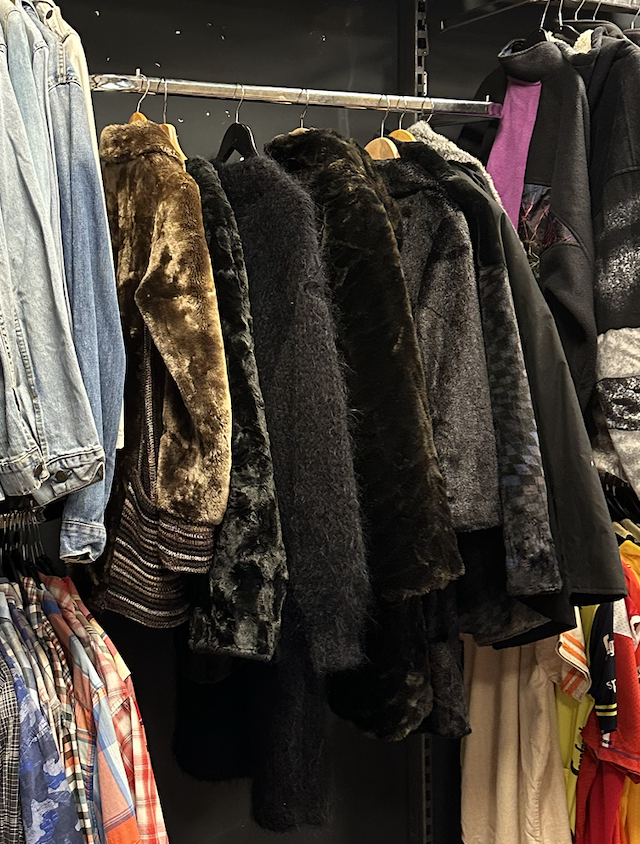

Welkom bij de Collectie Highlights
Ontdek samen met New Age Vintage de diversiteit en rijkdom van de We Are Vintage collectie. Hier vieren we mode zonder grenzen, geschikt voor iedereen die de unieke charme van vintage waardeert. Zoasl; Trending
In elke we are vintage, is er in elke afdeling een rek met stukken die trending op sociale media zij. Zoals nu, is de "mob wife style" met grote bond jassen trending op Tiktok. Zo is er een speciale rek daarvoor voor mensen die trendy willen zijn maar toch VINTAGE blijven!
Uitgelichte Stukken
Van klassieke silhouetten tot opvallende statement pieces, vind items die verhalen uit het verleden vertellen en jouw persoonlijke stijl verrijken.
- Brede scala aan kleuren
- De trendy Merry Jane
- Winter schoennen "seasonal"
- handschoennen "seasonal"
Stijladvies
Laat je leiden door onze tips en trucs om vintage stukken te integreren in jouw dagelijkse garderobe. Ontdek hoe je met items van We Are Vintage een moderne twist kunt geven aan klassieke looks.
- Mix & Match: Combineer vintage stukken met moderne kleding voor een tijdloze look. Een vintage blouse kan bijvoorbeeld prachtig staan bij een hedendaagse skinny jeans of een strakke rok. Durf te mixen met texturen en patronen voor een unieke outfit.
- Laagjes: Vintage jassen en vesten zijn perfect voor laagjes. Draag een klassieke trenchcoat over een vintage jurk of combineer verschillende laagjes zoals een vest over een blouse voor een gelaagde, maar gestroomlijnde look.
- Accessorize: Vintage accessoires kunnen een moderne outfit een unieke flair geven. Denk aan sieraden, sjaals, hoeden en handtassen. Een opvallende vintage ketting of een elegante clutch kan je hele look transformeren.
- Statement Pieces: Laat een enkel vintage stuk de ster van je outfit zijn. Dit kan een kleurrijke maxi-jurk zijn, een uniek bedrukte blouse, of een opvallend jasje. Houd de rest van je outfit eenvoudig om het statement piece echt te laten schitteren.
- Denk aan de Details: Vintage kleding is vaak rijk aan details die je niet vindt in hedendaagse mode. Let op bijzondere knopen, borduursels, plooien en stiksels die je outfit een extra dimensie kunnen geven.
- Persoonlijke Touch: Het mooiste aan vintage mode is de mogelijkheid om je eigen unieke stijl te creëren. Experimenteer met verschillende stukken en vind wat het beste bij jou past. Vintage mode gaat niet alleen om het volgen van trends, maar om het uitdrukken van je persoonlijkheid.
Onthoud dat er geen vaste regels zijn als het gaat om vintage mode. Het is een kans om te experimenteren, jezelf uit te drukken en uniek te zijn. Laat je inspireren door het verleden, maar voeg altijd je eigen moderne draai toe.
Ontdek Jouw Vintage Schat
Ben je geïnspireerd om je eigen unieke vintage stuk te vinden? Bezoek We Are Vintage voor een persoonlijke ervaring en laat New Age Vintage je gids zijn in de wereld van vintage mode.